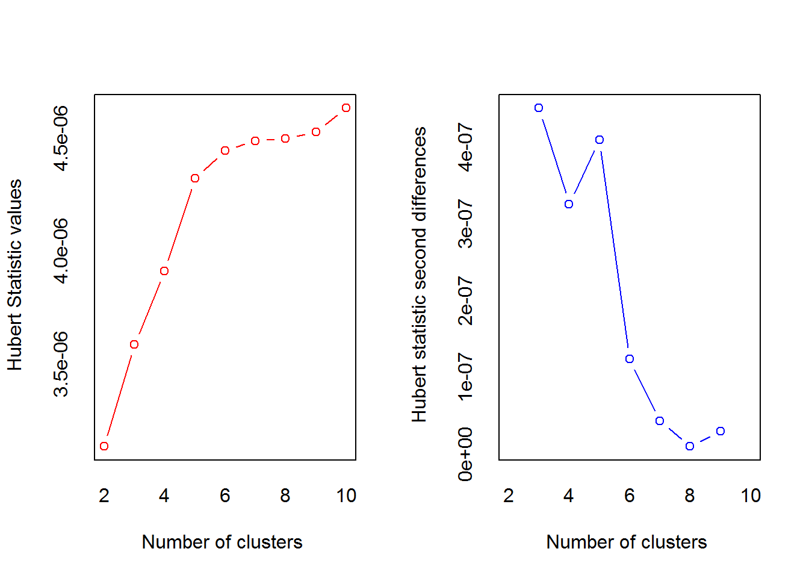

Load libraries
library(data.table)
library(datasets)
library(MASS)
library(ISLR)
library(caret)
library(ggplot2)
library(GGally)
library(factoextra)
library(NbClust)Task 1:
Analyze the Boston dataset from the MASS package.
Load the data & Data exploration
data <- data.table(Boston)
ggcorr(data)The graph suggests that the highest correlation is bw crim and {indus,nox,age,rad,tax,lstat} Lets graph them.
Scatter plots
# INDUS - proportion of non-retail business acres per town.
ggplot(data, aes(x = indus, y = crim)) + geom_point(color = "darkgreen") + theme_classic()# NOX - nitric oxides concentration (parts per 10 million)
ggplot(data, aes(x = nox, y = crim)) + geom_point(color = "darkgreen") + theme_classic()# proportion of owner-occupied units built prior to 1940
ggplot(data, aes(x = age, y = crim)) + geom_point(color = "darkgreen") + theme_classic()# index of accessibility to radial highways
ggplot(data, aes(x = rad, y = crim)) + geom_point(color = "darkgreen") + theme_classic()# full-value property-tax rate per $10,000
ggplot(data, aes(x = tax, y = crim)) + geom_point(color = "darkgreen") + theme_classic()# % lower status of the population
ggplot(data, aes(x = lstat, y = crim)) + geom_point(color = "darkgreen") + theme_classic()Use this set as possible explanatory variables {indus,nox,age,rad,tax,lstat} for predicting crime rate.
Create a training and a test set of 50%
training_ratio <- 0.5
set.seed(1234)
train_indices <- createDataPartition(y = data[["crim"]],
times = 1,
p = training_ratio,
list = FALSE)
train_set <- data[train_indices, ]
test_set <- data[-train_indices, ]Use a linear regression to predict crim and use 10-fold cross validation to assess the predictive power.
set.seed(1234)
lm_fit <- train(crim ~ indus + nox + age + rad + tax + lstat,
data = train_set,
method = "lm",
trControl = trainControl(method = "cv", number = 10),
preProcess = c("center", "scale"))
lm_fit## Linear Regression
##
## 254 samples
## 6 predictor
##
## Pre-processing: centered (6), scaled (6)
## Resampling: Cross-Validated (10 fold)
## Summary of sample sizes: 228, 230, 230, 227, 229, 228, ...
## Resampling results:
##
## RMSE Rsquared MAE
## 5.913542 0.644013 2.964199
##
## Tuning parameter 'intercept' was held constant at a value of TRUE# RMSE Rsquared MAE
# 5.913542 0.644013 2.964199# Search for the appropriate dimension for the PCA component
tune_grid <- data.frame(ncomp = 1:6) # ncomp = nb of explanatory vars
set.seed(1234)
pcr_fit <- train(crim ~ indus + nox + age + rad + tax + lstat,
data = train_set,
method = "pcr",
trControl = trainControl(method = "cv", number = 10),
tuneGrid = tune_grid,
preProcess = c("center", "scale") # essential to normalize data
)
pcr_fit## Principal Component Analysis
##
## 254 samples
## 6 predictor
##
## Pre-processing: centered (6), scaled (6)
## Resampling: Cross-Validated (10 fold)
## Summary of sample sizes: 228, 230, 230, 227, 229, 228, ...
## Resampling results across tuning parameters:
##
## ncomp RMSE Rsquared MAE
## 1 6.441712 0.5293864 3.768553
## 2 6.098177 0.6125413 3.115906
## 3 5.935138 0.6398305 3.097011
## 4 5.910706 0.6422024 3.076756
## 5 5.935354 0.6370750 3.097051
## 6 5.913542 0.6440130 2.964199
##
## RMSE was used to select the optimal model using the smallest value.
## The final value used for the model was ncomp = 4.RMSE = 5.910706, was used to select the optimal model using the smallest value. The final value used for the model was ncomp = 4 hence the PCA Dimension should equal 4. The PCA with 4 dimensions diminishes the RMSE a bit (5.913542 vs 5.910706). Hence, it improves the fit of the simple linear model.
set.seed(1234)
fit_control <- trainControl(method = "cv", number = 10)
# alpha param - differentiate bw lasso(1), ridge(0) and elastic net((0,1)).
# lambda param - define the penalty param
tune_grid <- expand.grid("alpha" = seq(0, 1, 0.1), "lambda" = c(0.1, 0.01, 0.001, 0.0001))
set.seed(1234)
gmlnet_fit <- train(crim ~ indus + nox + age + rad + tax + lstat,
data = train_set,
method = "glmnet",
preProcess = c("center", "scale"), # essential to normalize data
tuneLength = 10,
tuneGrid = tune_grid,
trControl = fit_control)
gmlnet_fit## glmnet
##
## 254 samples
## 6 predictor
##
## Pre-processing: centered (6), scaled (6)
## Resampling: Cross-Validated (10 fold)
## Summary of sample sizes: 228, 230, 230, 227, 229, 228, ...
## Resampling results across tuning parameters:
##
## alpha lambda RMSE Rsquared MAE
## 0.0 1e-04 5.878563 0.6441750 2.943299
## 0.0 1e-03 5.878563 0.6441750 2.943299
## 0.0 1e-02 5.878563 0.6441750 2.943299
## 0.0 1e-01 5.878563 0.6441750 2.943299
## 0.1 1e-04 5.908002 0.6444875 2.958223
## 0.1 1e-03 5.908002 0.6444875 2.958223
## 0.1 1e-02 5.908002 0.6444875 2.958223
## 0.1 1e-01 5.897987 0.6453877 2.946699
## 0.2 1e-04 5.906924 0.6447176 2.955682
## 0.2 1e-03 5.906924 0.6447176 2.955682
## 0.2 1e-02 5.906924 0.6447176 2.955682
## 0.2 1e-01 5.893843 0.6461705 2.937319
## 0.3 1e-04 5.906672 0.6449136 2.952997
## 0.3 1e-03 5.906672 0.6449136 2.952997
## 0.3 1e-02 5.906672 0.6449136 2.952997
## 0.3 1e-01 5.890114 0.6468911 2.928726
## 0.4 1e-04 5.905180 0.6451366 2.950824
## 0.4 1e-03 5.905180 0.6451366 2.950824
## 0.4 1e-02 5.905180 0.6451366 2.950824
## 0.4 1e-01 5.886695 0.6474993 2.920989
## 0.5 1e-04 5.905836 0.6451113 2.951967
## 0.5 1e-03 5.905836 0.6451113 2.951967
## 0.5 1e-02 5.905836 0.6451113 2.951967
## 0.5 1e-01 5.883328 0.6480192 2.914175
## 0.6 1e-04 5.907166 0.6450060 2.952609
## 0.6 1e-03 5.907166 0.6450060 2.952609
## 0.6 1e-02 5.907166 0.6450060 2.952609
## 0.6 1e-01 5.880815 0.6483883 2.909408
## 0.7 1e-04 5.907288 0.6449700 2.952927
## 0.7 1e-03 5.907288 0.6449700 2.952927
## 0.7 1e-02 5.907288 0.6449700 2.952927
## 0.7 1e-01 5.878608 0.6486193 2.906668
## 0.8 1e-04 5.907628 0.6449468 2.953222
## 0.8 1e-03 5.907628 0.6449468 2.953222
## 0.8 1e-02 5.907628 0.6449468 2.953222
## 0.8 1e-01 5.876557 0.6488364 2.904801
## 0.9 1e-04 5.907849 0.6449490 2.953438
## 0.9 1e-03 5.907849 0.6449490 2.953438
## 0.9 1e-02 5.907807 0.6449647 2.953354
## 0.9 1e-01 5.875098 0.6490305 2.903098
## 1.0 1e-04 5.907461 0.6448067 2.952258
## 1.0 1e-03 5.907461 0.6448067 2.952258
## 1.0 1e-02 5.906953 0.6449022 2.951476
## 1.0 1e-01 5.873795 0.6491664 2.900587
##
## RMSE was used to select the optimal model using the smallest value.
## The final values used for the model were alpha = 1 and lambda = 0.1.The final values used for the model were alpha = 1(lasso) and lambda = 0.1.
RMSE = 5.873795, pretty close to previous model RMSE results but better than PCA with dim 4 and simple linear model.
# add PCA
set.seed(1234)
gmlnet_fit2 <- train(crim ~ indus + nox + age + rad + tax + lstat,
data = train_set,
method = "glmnet",
preProcess = c("center", "scale", "pca"),
tuneLength = 10,
tuneGrid = tune_grid,
trControl = fit_control)
gmlnet_fit2## glmnet
##
## 254 samples
## 6 predictor
##
## Pre-processing: centered (6), scaled (6), principal component
## signal extraction (6)
## Resampling: Cross-Validated (10 fold)
## Summary of sample sizes: 228, 230, 230, 227, 229, 228, ...
## Resampling results across tuning parameters:
##
## alpha lambda RMSE Rsquared MAE
## 0.0 1e-04 5.868178 0.6422024 2.984988
## 0.0 1e-03 5.868178 0.6422024 2.984988
## 0.0 1e-02 5.868178 0.6422024 2.984988
## 0.0 1e-01 5.868178 0.6422024 2.984988
## 0.1 1e-04 5.904593 0.6421895 3.064343
## 0.1 1e-03 5.904593 0.6421895 3.064343
## 0.1 1e-02 5.904593 0.6421895 3.064343
## 0.1 1e-01 5.900881 0.6421778 3.054620
## 0.2 1e-04 5.905079 0.6421801 3.064370
## 0.2 1e-03 5.905079 0.6421801 3.064370
## 0.2 1e-02 5.905079 0.6421801 3.064370
## 0.2 1e-01 5.900205 0.6421483 3.051194
## 0.3 1e-04 5.905504 0.6421693 3.064777
## 0.3 1e-03 5.905504 0.6421693 3.064777
## 0.3 1e-02 5.905504 0.6421693 3.064777
## 0.3 1e-01 5.899573 0.6421138 3.047761
## 0.4 1e-04 5.905919 0.6421676 3.064966
## 0.4 1e-03 5.905919 0.6421676 3.064966
## 0.4 1e-02 5.905919 0.6421676 3.064966
## 0.4 1e-01 5.898986 0.6420744 3.044319
## 0.5 1e-04 5.906226 0.6421637 3.065297
## 0.5 1e-03 5.906226 0.6421637 3.065297
## 0.5 1e-02 5.906226 0.6421637 3.065297
## 0.5 1e-01 5.898443 0.6420298 3.040871
## 0.6 1e-04 5.906360 0.6421593 3.065276
## 0.6 1e-03 5.906360 0.6421593 3.065276
## 0.6 1e-02 5.906360 0.6421593 3.065276
## 0.6 1e-01 5.897947 0.6419800 3.037423
## 0.7 1e-04 5.906388 0.6421544 3.065024
## 0.7 1e-03 5.906388 0.6421544 3.065024
## 0.7 1e-02 5.906388 0.6421544 3.065024
## 0.7 1e-01 5.897496 0.6419250 3.033978
## 0.8 1e-04 5.906716 0.6421544 3.065643
## 0.8 1e-03 5.906716 0.6421544 3.065643
## 0.8 1e-02 5.906716 0.6421544 3.065643
## 0.8 1e-01 5.897091 0.6418646 3.030524
## 0.9 1e-04 5.906623 0.6421488 3.065131
## 0.9 1e-03 5.906623 0.6421488 3.065131
## 0.9 1e-02 5.906623 0.6421488 3.065131
## 0.9 1e-01 5.896733 0.6417988 3.027196
## 1.0 1e-04 5.906847 0.6421488 3.065554
## 1.0 1e-03 5.906847 0.6421488 3.065554
## 1.0 1e-02 5.906847 0.6421488 3.065554
## 1.0 1e-01 5.896421 0.6417275 3.024203
##
## RMSE was used to select the optimal model using the smallest value.
## The final values used for the model were alpha = 0 and lambda = 0.1.The final values used for the model were alpha = 0 and lambda = 0.1
RMSE = 5.868178. Adding a PCA component to the penalized linear model improves the fit even more. However, now the best performing model is Ridge (alpha = 0).
Evaluate the combined model on the test set.
# The best perfoming model is Rigde with principal component signal extraction (6).
test_prediction <- predict.train(gmlnet_fit2, newdata = test_set)
RMSE(test_prediction, test_set[["crim"]])## [1] 6.262462RMSE = 6.262462 - performs worse on test set
Task 2:
Perform PCA on 40 observations of 1000 variables. The variables are measurments of genes of tissues of healthy and diseased patients: the first 20 observations are coming from healthy and the others from diseased patients.
Data comes from the ISLR package.
Load and look at the tail of the data set.
data <- fread("data\\gene_data.csv")
data[, is_diseased := factor(is_diseased)]
dim(data)## [1] 40 1001tail(names(data))## [1] "measure_995" "measure_996" "measure_997" "measure_998" "measure_999"
## [6] "is_diseased"Perform PCA on this data with scaling features.
data_features <- copy(data)
# drop the variable with the labels
data_features[, is_diseased := NULL]
dim(data_features)## [1] 40 1000pca_result <- prcomp(data_features, scale. = TRUE)Visualize datapoints in the space of the first two principal components
fviz_pca_ind(pca_result, geom = "point")This plot shows that the first dimension covers 8.1% of the variance in the whole data, while the second components accounts for 3.4%. Usually, the first dimension is expected to explain a much larger share of the variance.
Which individual features matter the most in separating diseased from healthy?
# Look for high loadings features
# create 2 vectors with PCA nb 1 - the original and one with only abs values
pca_1 = pca_result$rotation[,1]
pca_1_abs = abs(pca_result$rotation[,1])
# find the index of the two greatest values in abs terms
index.top.N = function(xs, N=2){
if(length(xs) > 0) {
o = order(xs, na.last=FALSE)
o.length = length(o)
if (N > o.length) N = o.length
o[((o.length-N+1):o.length)]
}
else {
0
}
}
index.top.N(pca_1_abs,2)## [1] 545 450The indexes of the 2 greatest values in PCA 1 = {545; 450}.
pca_1[545] # measure_589 has pca 1 = 0.09449766 ## measure_589
## 0.09449766pca_1[450] # measure_502 has pca 1 = 0.09485044## measure_502
## 0.09485044ggplot(data_features, aes(measure_589, measure_502)) + geom_point(color = "darkgreen") +
geom_smooth(method = "loess") +
ggtitle("Scatter plot of the 2 features with highest loading in PC1") +
theme_classic()There seems to be a positive nonlinear relationship among these 2 features in the lower bands. However, the relationship flattens out in the higher bands.
ggplot(data, aes(x = measure_502, y = measure_589, color = is_diseased)) +
geom_point() +
ggtitle('Healthy and diseased patients defined by the two most important features in PC1') +
theme_classic()We observe that Dim 1 differentiates very well between the two clusters. Hence, instead of using all 1000 vars, we could use only these two features and achieve satisfactory results.
Task 3:
Data sets used is USArrests. Our task is to apply clustering and then make sense of the clusters using the principal components.
Determine the optimal number of clusters
data <- USArrests
nb <- NbClust(data, method = "kmeans",
min.nc = 2, max.nc = 10, index = "all")
## *** : The Hubert index is a graphical method of determining the number of clusters.
## In the plot of Hubert index, we seek a significant knee that corresponds to a
## significant increase of the value of the measure i.e the significant peak in Hubert
## index second differences plot.
## ## *** : The D index is a graphical method of determining the number of clusters.
## In the plot of D index, we seek a significant knee (the significant peak in Dindex
## second differences plot) that corresponds to a significant increase of the value of
## the measure.
##
## *******************************************************************
## * Among all indices:
## * 9 proposed 2 as the best number of clusters
## * 6 proposed 3 as the best number of clusters
## * 1 proposed 4 as the best number of clusters
## * 3 proposed 5 as the best number of clusters
## * 4 proposed 7 as the best number of clusters
## * 1 proposed 10 as the best number of clusters
##
## ***** Conclusion *****
##
## * According to the majority rule, the best number of clusters is 2
##
##
## *******************************************************************fviz_nbclust(nb)## Among all indices:
## ===================
## * 2 proposed 0 as the best number of clusters
## * 9 proposed 2 as the best number of clusters
## * 6 proposed 3 as the best number of clusters
## * 1 proposed 4 as the best number of clusters
## * 3 proposed 5 as the best number of clusters
## * 4 proposed 7 as the best number of clusters
## * 1 proposed 10 as the best number of clusters
##
## Conclusion
## =========================
## * According to the majority rule, the best number of clusters is 2 .By employing the NbClust, we conclud that the optimal number of clusters is 2.
km_clustering <- kmeans(data, centers = 2)
km_clustering ## K-means clustering with 2 clusters of sizes 29, 21
##
## Cluster means:
## Murder Assault UrbanPop Rape
## 1 4.841379 109.7586 64.03448 16.24828
## 2 11.857143 255.0000 67.61905 28.11429
##
## Clustering vector:
## Alabama Alaska Arizona Arkansas California
## 2 2 2 2 2
## Colorado Connecticut Delaware Florida Georgia
## 2 1 2 2 2
## Hawaii Idaho Illinois Indiana Iowa
## 1 1 2 1 1
## Kansas Kentucky Louisiana Maine Maryland
## 1 1 2 1 2
## Massachusetts Michigan Minnesota Mississippi Missouri
## 1 2 1 2 1
## Montana Nebraska Nevada New Hampshire New Jersey
## 1 1 2 1 1
## New Mexico New York North Carolina North Dakota Ohio
## 2 2 2 1 1
## Oklahoma Oregon Pennsylvania Rhode Island South Carolina
## 1 1 1 1 2
## South Dakota Tennessee Texas Utah Vermont
## 1 2 2 1 1
## Virginia Washington West Virginia Wisconsin Wyoming
## 1 1 1 1 1
##
## Within cluster sum of squares by cluster:
## [1] 54762.30 41636.73
## (between_SS / total_SS = 72.9 %)
##
## Available components:
##
## [1] "cluster" "centers" "totss" "withinss"
## [5] "tot.withinss" "betweenss" "size" "iter"
## [9] "ifault"# create new var that indicated to which cluster does the obs belong to
data_w_clusters <- cbind(data, data.table("cluster" = factor(km_clustering$cluster)))Visualize the two clusters
ggplot(data_w_clusters,
aes(x = Assault, y = UrbanPop , color = cluster)) + geom_point() + theme_classic()ggplot(data_w_clusters,
aes(x = Murder, y = UrbanPop , color = cluster)) + geom_point() + theme_classic()ggplot(data_w_clusters,
aes(x = Rape, y = UrbanPop , color = cluster)) + geom_point() + theme_classic()pca_result <- prcomp(data, scale. = TRUE)
first_two_pc <- data.table(pca_result$x[, 1:2])
data_w_pca <- cbind(data_w_clusters, first_two_pc)
#first_two_pc
fviz_pca(pca_result, scale = 0)## Warning: Ignoring unknown parameters: scaleThe first dim captures the crime variables, while the second dim captures the urban population.
Alternative visualization
fviz_pca_ind(pca_result, geom = "point", habillage = data_w_clusters[['cluster']],
addEllipses=TRUE , palette = c("green", "red"))Dim 1 is a good differentiator between the two clusters.
ggplot(data_w_pca, aes(x = PC1, y = PC2, color = cluster)) +
geom_point() + geom_text(aes(label = rownames(data_w_pca))) +
theme_classic() + ggtitle("Cluster breakdown per Principal Component")